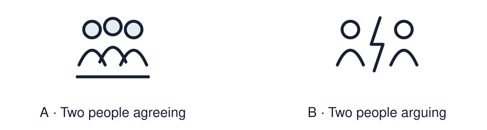

Arrival choices
Previous lesson reminder:

Start with 1 and 2. Try 3 and 4 when ready. Reading and exact scribing are available.
1 What value do Aisha and Tom share?
Support: Use the reminder strip or talk it through with an adult.
2 Which meaning fits peace?
Support: Choose: When people are safe and not in conflict OR To let someone join in.
3 When is the International Day of Peace?
Support: Use the model evidence anchor A or read one relevant card together.
4 Is reflection the same as worship?
Support: Give a reason when ready.
Stretch: use a precise example or explain which detail supports your answer.
Evidence cards
Read, point or listen. Keep the source label with any detail you use.
A The Day of Peace
The United Nations set up the International Day of Peace. It is held every year on 21 September. People around the world think about how to build peace.
Source: Authored summary of the United Nations observance
Limit: A day of peace does not end conflict. It asks people to act.
B Peace starts small
Fictional case: two pupils both want the same seat. They agree to swap each day. A small fair choice keeps the room calm.
Source: Authored classroom case
Limit: This example does not describe every person, family or community.
C Including someone
Fictional case: Rio eats alone at break. Dev asks, “Want to sit with us?” Being included helps Rio feel safe.
Source: Authored classroom case
Limit: This example does not describe every person, family or community.
D Reflection
Reflection is quiet thinking. It is not worship. You can think, draw, or look at a calm picture.
Source: Authored classroom resource
Limit: People reflect in different ways. Silence is one option, not a rule.
Shared investigation
1. Decide whether each action helps build peace.
2. Say who feels safer because of it.
Work with a partner or adult, or use your own table. One person suggests; the other checks the evidence. Swap after one turn. Passing is allowed.
Move or match the cards
| Cards to use |
|---|
| Ask someone to sit with you |
| Leave someone out on purpose |
| Agree to take turns with the seat |
Possible labels: Builds peace / Needs changing
Support: Show two choices. Read one short instruction. Point, match or say a word, then add a reason when ready.
Further challenge: Explain how a small action in one room links to peace in a community.
Supported independent task
Complete this route only. Reflect quietly on belonging and choose one action that helps create peace.
1. Choose a peace symbol or word for your card.
2. Add it to the card template.
3. Point to one action that builds peace.
Support: Show two choices. Read one short instruction. Point, match or say a word, then add a reason when ready. Complete the organiser one space at a time. One action that builds peace is ___ because ___.
An adult may read or scribe your exact response. They should not choose the answer.
Standard independent task
Complete this route only. Reflect quietly on belonging and choose one action that helps create peace.
1. Create a peace or belonging card with a word, symbol or sentence.
2. Choose one action that builds peace.
3. Say why that action helps.
Support: One action that builds peace is ___ because ___.
Check the required evidence and revise one detail.
Stretch independent task
Complete this route only. Reflect quietly on belonging and choose one action that helps create peace.
1. Create a peace or belonging card with a short sentence.
2. Choose one action and explain who it helps.
3. Explain how small actions link to peace in a community.
Support: Choose the evidence independently. Use the frame only if it helps.
Explain how a small action in one room links to peace in a community.
Exit ticket
Choose a response mode. You may give your answers privately to an adult.
When is the International Day of Peace?
Is reflection the same as worship?
Support: One action that builds peace is ___ because ___.
Further challenge: Explain how a small action in one room links to peace in a community.